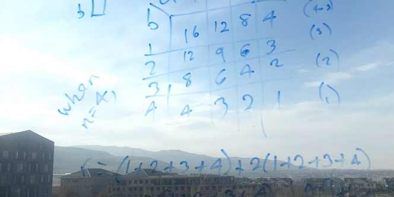

An Introduction to Mathematical Proof
2021-01-01
Chapter 1 Getting started

1.1 About this course
The course this book accompanies “Reason and Argue Better: Logic in Proof and Argument”, which was written between 2018-2019 and has been taught every semester since.
1.2 About this book
This book contains the material we will study as well as exercises (see the next section) and links for further reading. Most weeks I will assign you a chapter to read, and you should complete both the reading and the exercises within the chapter before our next class. This is a “living” textbook, which means that it will be updated throughout the course. This is for two reasons: (i) because mistakes are noticed (by you or me) and corrections made, (ii) because I am still writing and improving sections of it. Therefore, even though you can read ahead of the set chapter, you are advised that later chapters might change.
Also note that because this textbook will be updated during the course, you are advised to access the book at the link at https://ijcwebb.github.io/proof, rather than printing or downloading the book.
1.3 In this book…
Exercise 1.1 Regular exercises look like this…
- …with subparts like this.
Solution. Solutions might be included underneath exercises, in which case you should aim to complete the exercise before checking the solution. If the solution is not included, then we will probably discuss it in class.
Careful! This is where I alert you to mistakes commonly made by students in this course. Read these warnings carefully to avoid these mistakes yourself.
What we’ve learnt These boxes are found at the end of each chapter, and recap the main things we have covered in the chapter. You can view these as key takeaways from the chapter. These often set us up for the next chapter too.
\[\begin{equation} f\left(k\right) = \binom{n}{k} p^k\left(1-p\right)^{n-k} \tag{1.1} \end{equation}\]
\[\begin{equation} f\left(k\right) = \binom{n}{k} p^k\left(1-p\right)^{n-k} \end{equation}\]
\[\begin{align} a_1& =b_1+c_1\\ a_2& =b_2+c_2-d_2+e_2\\ \mathbb R \end{align}\]
\[\begin{equation} y = mx+b \end{equation}\]